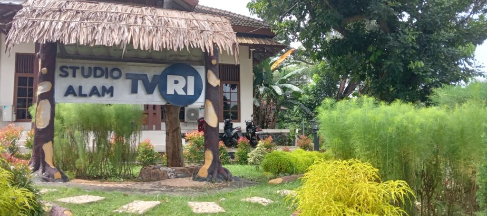
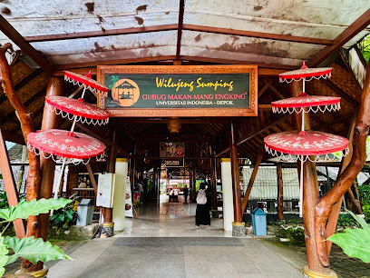
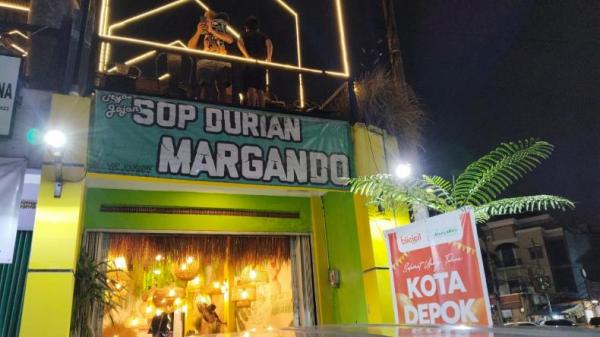
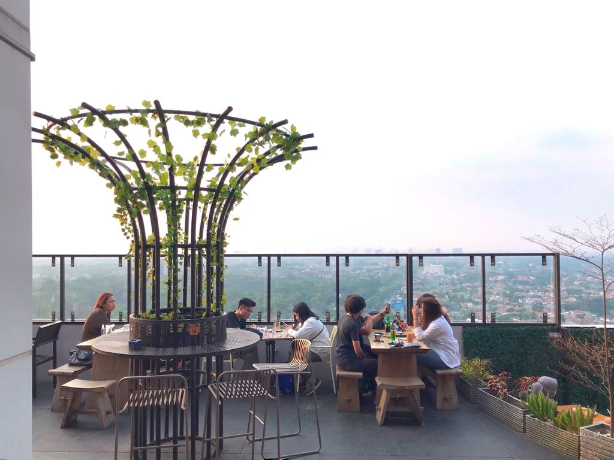
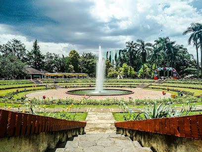
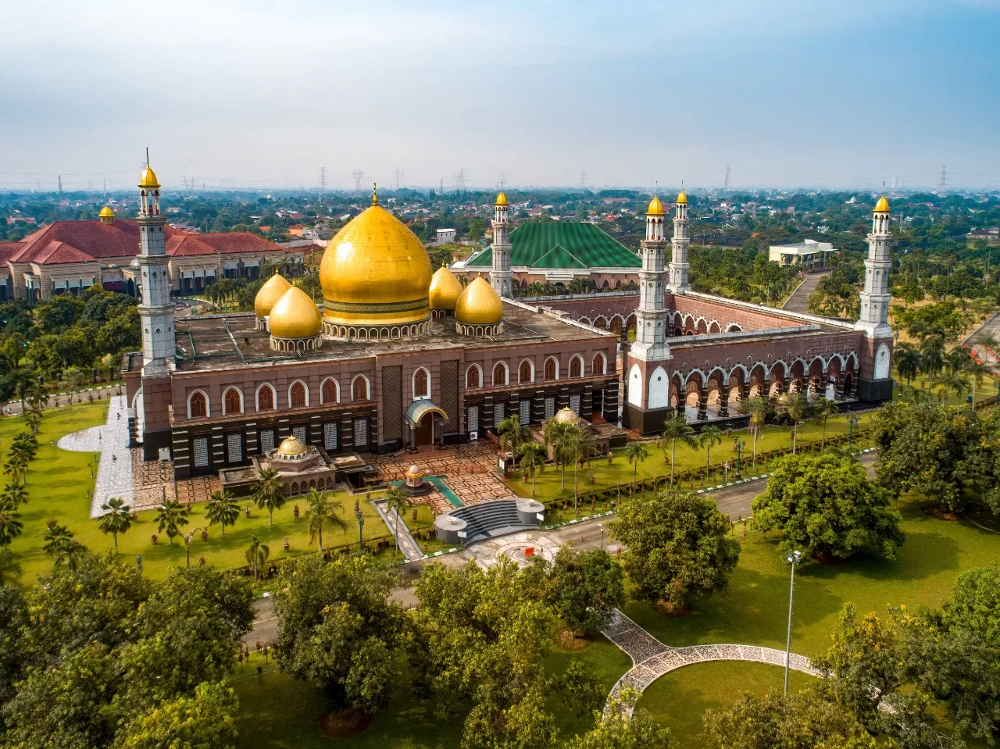

Kota Depok
Beranda
Sejarah
Layanan
Pendidikan
Balai Kota
Wisata & Kuliner
Wisata & Kuliner Kota Depok

Studio Alam TVRI
Wisata Rekreasi
Fat Bubble
Wisata Kuliner

Gubug Makan Mang Engking
Wisata Kuliner
Green Lake View Waterpark
Wisata Rekreasi

Sop Durian Margando
Wisata Kuliner

Tamelo Atap Kafe
Wisata Kuliner

Taman Bunga Wiladatika
Wisata Rekreasi

Masjid Dian Al-Mahri (Kubah Emas)
Wisata Religi